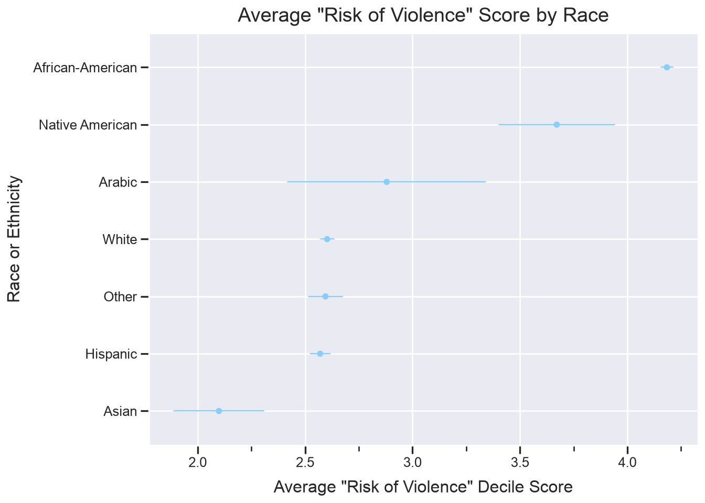

import os # os for "operating system"
# "mkdir" stands for "make directory" (a "directory" is just a folder!)
os.mkdir('data')
os.mkdir('output')Intro to Linear Regression in Python
Modeling the Effect of Sex and Race on Risk of Violence using COMPAS score data
This tutorial is based on an R version of this tutorial, which can be found here
The data that we’ll be using for this tutorial is from this work by ProPublica which aimed to assess a popular commercial system COMPAS, which is a criminal defendant risk-assessment tool, for bias against any individual groups. They evaluated the Risk of Recidivism algorithm, in this tutorial, we’re going to evaluate the Risk of Violence algorithm.
Learning Objectives
- Gain familiarity with Python
- Practice reading and manipulating data in Pandas
- Run a linear model using statsmodels
- Visualize predicted risk of violence scores with error bars
Use this link to download the dataset (right-click on the link and select Save As...). Make sure to save it somewhere you’ll remember, like your Desktop or Downloads. We’ll be moving it somewhere else later.
Setup
Before we get into the nitty-gritty of this tutorial, first we need to set up our development environment.
Create subfolders to keep our project organized
We will first create two folders, one called data and one called output, inside the project folder we just created. To do this using Python, we can run the following code:
Once you’ve created the two folders, we’ll move the data we just downloaded into your new data folder. Drag and drop the data file from where you saved it into the data folder.
ImportantPackage installation for Colab (or otherwise)
If you’re using Google Colab, run the pip command below to make sure these packages are installed. If you have a local installation and use either pip or uv to install packages, you can still run the code below if necessary
pip command
!pip3 install pandas statsmodels plotnineuv command (local installs)
# ideally, run this in Terminal without the !,
# if installing locally!
!uv add pandas statsmodels plotnineImport packages
Importing packages in Python is like opening an application on your phone or your computer. When you want to write a paper or something similar, you might open Microsoft Word or Google Docs and then create your document. We open the application so we can use it, and importing is the same idea!
import pandas as pd
import numpy as np
# import seaborn as sns
# import matplotlib.pyplot as plt
from plotnine import *
import statsmodels.api as smWrangle the data
First, let’s read the data we downloaded into a Pandas DataFrame. Because the data is in our data folder, we need to tell Python to look inside that folder to find the .csv file. This is called a “relative path”, or “the path to get to the file we want from where we are”. The / indicates that compas-scores-raw.csv is inside the data folder.
compas_data = pd.read_csv('data/compas-scores-raw.csv')
compas_data.head()| Person_ID | AssessmentID | Case_ID | Agency_Text | LastName | FirstName | MiddleName | Sex_Code_Text | Ethnic_Code_Text | DateOfBirth | ... | RecSupervisionLevel | RecSupervisionLevelText | Scale_ID | DisplayText | RawScore | DecileScore | ScoreText | AssessmentType | IsCompleted | IsDeleted | |
|---|---|---|---|---|---|---|---|---|---|---|---|---|---|---|---|---|---|---|---|---|---|
| 0 | 50844 | 57167 | 51950 | PRETRIAL | Fisher | Kevin | NaN | Male | Caucasian | 12/05/92 | ... | 1 | Low | 7 | Risk of Violence | -2.08 | 4 | Low | New | 1 | 0 |
| 1 | 50844 | 57167 | 51950 | PRETRIAL | Fisher | Kevin | NaN | Male | Caucasian | 12/05/92 | ... | 1 | Low | 8 | Risk of Recidivism | -1.06 | 2 | Low | New | 1 | 0 |
| 2 | 50844 | 57167 | 51950 | PRETRIAL | Fisher | Kevin | NaN | Male | Caucasian | 12/05/92 | ... | 1 | Low | 18 | Risk of Failure to Appear | 15.00 | 1 | Low | New | 1 | 0 |
| 3 | 50848 | 57174 | 51956 | PRETRIAL | KENDALL | KEVIN | NaN | Male | Caucasian | 09/16/84 | ... | 1 | Low | 7 | Risk of Violence | -2.84 | 2 | Low | New | 1 | 0 |
| 4 | 50848 | 57174 | 51956 | PRETRIAL | KENDALL | KEVIN | NaN | Male | Caucasian | 09/16/84 | ... | 1 | Low | 8 | Risk of Recidivism | -1.50 | 1 | Low | New | 1 | 0 |
5 rows × 28 columns
To determine the number of unique persons there are in this dataset (we can see above that there are multiple rows - i.e., observations - per person), we can take the length of the set of the Person_ID column. Alternatively, we could use the pd.Series.unique method demonstrated in the following step.
len(set(compas_data.Person_ID))18610This tells us there are 18,610 unique (or distinct) IDs in the dataset; each ID corresponds to one defendant.
The data come from ProPublica who released the initial study on this data. They state that “Each pre-trial defendant received at least three COMPAS scores: Risk of Recidivism, Risk of Violence, and Risk of Failure to Appear”.
Because we are interested in modeling risk of violence by race, what races are represented in this data?
compas_data.Ethnic_Code_Text.unique()<StringArray>
[ 'Caucasian', 'African-American', 'Hispanic',
'Other', 'Asian', 'African-Am',
'Native American', 'Oriental', 'Arabic']
Length: 9, dtype: strUpdate the race and ethnicity labels
The names used to represent the races/ethnic groups are both messy and/or antiquated. We’ll create a new column in our dataframe called race_ethnicity to contain our new attributes, to make a few adjustments that will, at least, partially improve the labels.
To do this, we will use the pd.Series.replace method. In order to replace multiple values at the same time, we’ll use a base Python object called a dictionary. It’s very similar to how it sounds: in a physical dictionary, we can find words mapped to definitions, right? A dictionary in Python is similar. In the context of pd.Series.replace, we provide a Python dictionary with the current value we want to replace mapped to what we want to replace it with. The format is {<to replace>: <replacement>}. In the context of our data, this looks like:
{
'Caucasian': 'White',
'African-Am': 'African-American',
'Oriental': 'Asian'
}So, let’s apply that to creating a new column race_ethnicity, where the antiquated or messy terms are replaced:
compas_data['race_ethnicity'] = compas_data['Ethnic_Code_Text'].replace(
to_replace = {'Caucasian': 'White',
'African-Am': 'African-American',
'Oriental': 'Asian'}
)
# let's look at the original labels vs the new labels
print("Original column:")
print(compas_data['Ethnic_Code_Text'].unique())
print()
print("New and improved column:")
print(compas_data['race_ethnicity'].unique())Original column:
<StringArray>
[ 'Caucasian', 'African-American', 'Hispanic',
'Other', 'Asian', 'African-Am',
'Native American', 'Oriental', 'Arabic']
Length: 9, dtype: str
New and improved column:
<StringArray>
[ 'White', 'African-American', 'Hispanic',
'Other', 'Asian', 'Native American',
'Arabic']
Length: 7, dtype: strFor the purposes of this tutorial, we’ll use only the Risk of Violence decile score. The goal is to answer the specific question: what is the effect of sex and race on risk of violence decile scores?
Filter dataset to include only Risk of Violence scores
Let’s filter the data by Risk of Violence in the DisplayText column and then extract only the columns we’re interested in. To filter out rows, we need to write a condition that clarifies what we want in our subset.
We clarify the condition using what we call a boolean expression. A boolean is a True or False value. So, if the expression evaluates to True for a given row, it’s included in our subset. We want all the rows where the value in the DisplayText column is equal to Risk of Violence, which looks like this:
compas_data['DisplayText'] == 'Risk of Violence'0 True
1 False
2 False
3 True
4 False
...
60838 False
60839 False
60840 True
60841 False
60842 False
Name: DisplayText, Length: 60843, dtype: boolThe output shows a Series of True or False values. It’s False for rows where DisplayText does not equal Risk of Violence, and True otherwise.
violence_risk = compas_data[compas_data['DisplayText'] == 'Risk of Violence']
violence_risk.head()| Person_ID | AssessmentID | Case_ID | Agency_Text | LastName | FirstName | MiddleName | Sex_Code_Text | Ethnic_Code_Text | DateOfBirth | ... | RecSupervisionLevelText | Scale_ID | DisplayText | RawScore | DecileScore | ScoreText | AssessmentType | IsCompleted | IsDeleted | race_ethnicity | |
|---|---|---|---|---|---|---|---|---|---|---|---|---|---|---|---|---|---|---|---|---|---|
| 0 | 50844 | 57167 | 51950 | PRETRIAL | Fisher | Kevin | NaN | Male | Caucasian | 12/05/92 | ... | Low | 7 | Risk of Violence | -2.08 | 4 | Low | New | 1 | 0 | White |
| 3 | 50848 | 57174 | 51956 | PRETRIAL | KENDALL | KEVIN | NaN | Male | Caucasian | 09/16/84 | ... | Low | 7 | Risk of Violence | -2.84 | 2 | Low | New | 1 | 0 | White |
| 6 | 50855 | 57181 | 51963 | PRETRIAL | DAYES | DANIEL | NaN | Male | African-American | 08/25/94 | ... | High | 7 | Risk of Violence | -1.20 | 8 | High | New | 1 | 0 | African-American |
| 9 | 50850 | 57176 | 51958 | PRETRIAL | Debe | Mikerlie | George | Female | African-American | 10/09/94 | ... | Medium | 7 | Risk of Violence | -1.29 | 7 | Medium | New | 1 | 0 | African-American |
| 12 | 50839 | 57162 | 51945 | PRETRIAL | McLaurin | Stephanie | Nicole | Female | African-American | 06/29/85 | ... | Low | 7 | Risk of Violence | -2.90 | 2 | Low | New | 1 | 0 | African-American |
5 rows × 29 columns
Now that we’ve created our subset, we can store the subset data for future use:
violence_risk.to_csv('output/risk_of_violence.csv', index = False)
# index = False says "don't include the row labels"Creating the linear model
Now, on to modeling.
We know that we have a subset of data on “Risk of Violence” from the COMPAS dataset and we want to determine the effect of sex and race on the risk of violence scores.
We can do this using statsmodel’s OLS function with the .from_formula method, which will allow us to establish the relationships between variables of interest ourselves. This is similar to the lm function in R. sm.OLS will take care of one-hot encoding the data in order to make predictions.
We’ll then group the data by race and take the average of the predicted DecileScores to answer the question “what is the mean score across all races?”
Fitting the model
First, we write out our formula (the ~ here can be read as “DecileScore as a function of race and sex”) and create the model. From there, we have to explicitly tell python to .fit() the model to the data, which provides the results. Then, we review the regression results by calling results.summary().
# fit model and get average predictions by race
formula = "DecileScore ~ race_ethnicity + Sex_Code_Text"
# initialize the model with the formula
model2 = sm.OLS.from_formula(formula = formula,
data = violence_risk)
# fit the model to our data
results = model2.fit()
# view the regression results in table format
results.summary()| Dep. Variable: | DecileScore | R-squared: | 0.116 |
|---|---|---|---|
| Model: | OLS | Adj. R-squared: | 0.116 |
| Method: | Least Squares | F-statistic: | 380.1 |
| Date: | Mon, 24 Aug 2026 | Prob (F-statistic): | 0.00 |
| Time: | 15:48:07 | Log-Likelihood: | -45704. |
| No. Observations: | 20281 | AIC: | 9.142e+04 |
| Df Residuals: | 20273 | BIC: | 9.149e+04 |
| Df Model: | 7 | ||
| Covariance Type: | nonrobust |
| coef | std err | t | P>|t| | [0.025 | 0.975] | |
|---|---|---|---|---|---|---|
| Intercept | 3.6826 | 0.039 | 93.355 | 0.000 | 3.605 | 3.760 |
| race_ethnicity[T.Arabic] | -1.4088 | 0.462 | -3.052 | 0.002 | -2.314 | -0.504 |
| race_ethnicity[T.Asian] | -2.1001 | 0.211 | -9.959 | 0.000 | -2.513 | -1.687 |
| race_ethnicity[T.Hispanic] | -1.6187 | 0.049 | -32.968 | 0.000 | -1.715 | -1.522 |
| race_ethnicity[T.Native American] | -0.4699 | 0.271 | -1.735 | 0.083 | -1.001 | 0.061 |
| race_ethnicity[T.Other] | -1.6088 | 0.082 | -19.603 | 0.000 | -1.770 | -1.448 |
| race_ethnicity[T.White] | -1.5538 | 0.036 | -42.725 | 0.000 | -1.625 | -1.483 |
| Sex_Code_Text[T.Male] | 0.6315 | 0.039 | 16.114 | 0.000 | 0.555 | 0.708 |
| Omnibus: | 1860.209 | Durbin-Watson: | 1.964 |
|---|---|---|---|
| Prob(Omnibus): | 0.000 | Jarque-Bera (JB): | 2425.319 |
| Skew: | 0.846 | Prob(JB): | 0.00 |
| Kurtosis: | 3.088 | Cond. No. | 38.6 |
Notes:
[1] Standard Errors assume that the covariance matrix of the errors is correctly specified.
Interpreting the results
Next, we want to understand the effect of the race and ethnicity, and sex on average Risk of Violence DecileScore predicted by the model.
We use the fit model to get predicted scores for each defendant (results.get_prediction()), based on the model fit. In order to aggregate the predictions for each defendant to the level of race and ethnicity as groups, we group the data and then take the average DecileScore per race_ethnicity value.
## Group to take the average decile score across all races and ethnicities
# get predicted decile scores for each defendant based on the fit model
predict_results = results.get_prediction(row_labels = violence_risk.race_ethnicity.values)
# use the summary frame to calculate average decile scores by race_ethnicity
result_frame = predict_results.summary_frame().groupby(level=0).mean()
# make race_ethnicity a col in result_frame and sort in descending order
result_frame.reset_index(inplace = True)
result_frame = result_frame.rename(columns = {'index':'race_ethnicity'})
result_frame.sort_values(by = "mean", ascending= False, inplace = True)
result_frame| race_ethnicity | mean | mean_se | mean_ci_lower | mean_ci_upper | obs_ci_lower | obs_ci_upper | |
|---|---|---|---|---|---|---|---|
| 0 | African-American | 4.183863 | 0.028432 | 4.128135 | 4.239592 | -0.333110 | 8.700837 |
| 4 | Native American | 3.671233 | 0.270263 | 3.141495 | 4.200971 | -0.876343 | 8.218809 |
| 1 | Arabic | 2.880000 | 0.460924 | 1.976552 | 3.783448 | -1.726087 | 7.486087 |
| 6 | White | 2.602810 | 0.031548 | 2.540972 | 2.664647 | -1.914240 | 7.119859 |
| 5 | Other | 2.594907 | 0.079760 | 2.438571 | 2.751244 | -1.924416 | 7.114231 |
| 3 | Hispanic | 2.570350 | 0.045292 | 2.481574 | 2.659126 | -1.947145 | 7.087845 |
| 2 | Asian | 2.099174 | 0.210025 | 1.687508 | 2.510839 | -2.436165 | 6.634512 |
Once we have the aggregated result_frame, we can plot the average DecileScores for each race along with the standard error associated with that measure to visualize differences between each group.
plot = (
ggplot(result_frame, aes(x = 'reorder(race_ethnicity, mean, ascending = True)', y = 'mean'))
+ geom_point(color = 'lightskyblue')
+ geom_errorbar(aes(ymin = 'mean-mean_se', ymax = 'mean+mean_se'),
width = 0.01, color = 'lightskyblue')
+ coord_flip()
+ theme_seaborn()
+ labs('Race or Ethnicity',
y = 'Average "Risk of Violence" Decile Score',
title = 'Average "Risk of Violence" Score by Race'
)
)
plot.show()
plot.save('output/risk_of_violence_plot.png', dpi = 300)/Users/sarahstueve/repos/learn-python/.venv/lib/python3.14/site-packages/plotnine/ggplot.py:623: PlotnineWarning: Saving 7.0 x 5.0 in image.
/Users/sarahstueve/repos/learn-python/.venv/lib/python3.14/site-packages/plotnine/ggplot.py:624: PlotnineWarning: Filename: output/risk_of_violence_plot.png